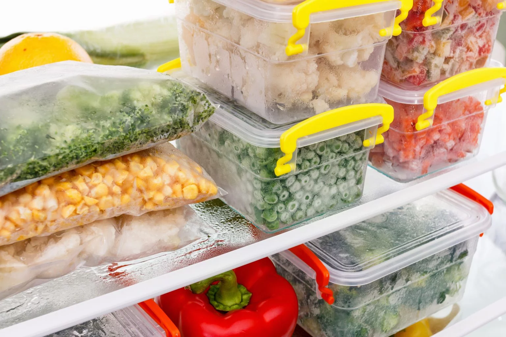
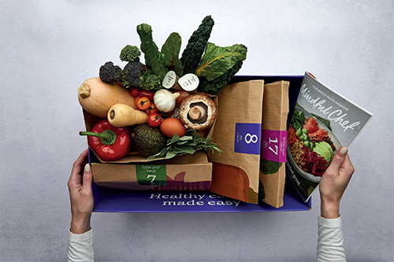
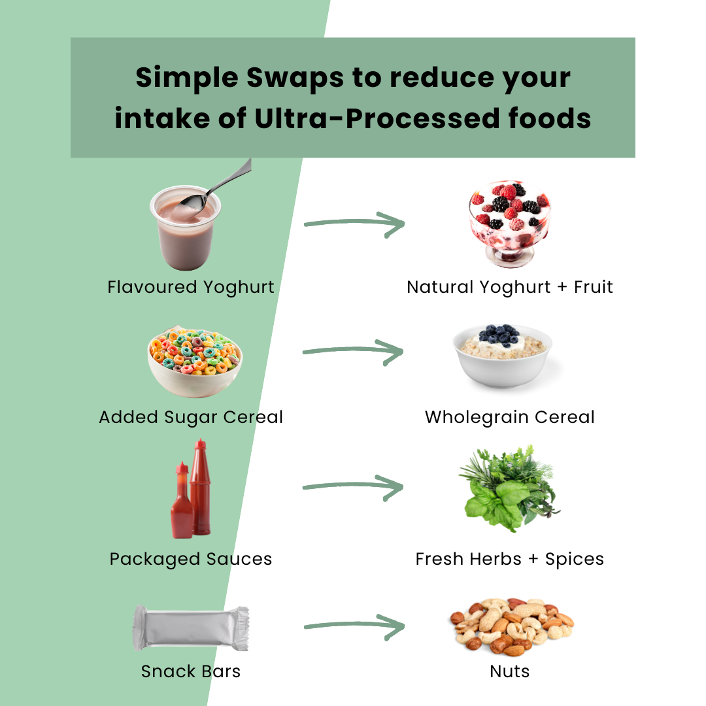
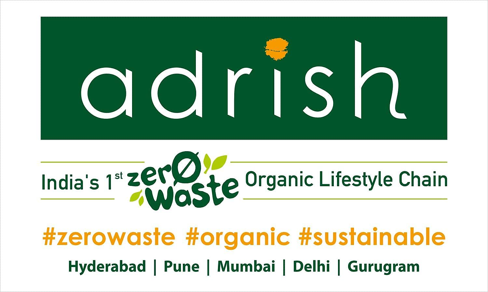

Donate your leftovers to your nearby Restaurants in Jalandhar, Our team will come and pick your leftovers in order to feed the needy.
What really is food waste?
Food waste is defined as food loss during retail and final consumption. Although the world produces enough food to feed everyone, millions of children still go to bed hungry every night. According to the latest research by the Food and Agriculture Organization (FAO), 828 million people are hungry in the world. We now wonder why this is happening; one of the primary reasons is food waste; according to the FAO, approximately 1.6 billion tons of food are wasted annually. This is a staggering amount of food that could have been used to feed millions of people. In this project, we are going to look at the effects and causes of food waste in India and how we can tackle them.
"The only way to deal with food waste is to stop wasting food."
Causes of Food waste in India
Nearly 40 percent of the food produced in India is wasted every year due to fragmented food systems and inefficient supply chains - a figure estimated by the Food and Agricultural Organisation (FAO).
Poor infrastructure:
Lack of proper storage facilities, transportation, and refrigeration systems lead to spoilage and wastage of food products.2. Inefficient supply chain management:
Inadequate supply chain management results in overproduction, which leads to food waste.Lack of awareness
Consumers often discard food items that are edible due to lack of awareness about their shelf life and storage conditions.Harvest and Post-Harvest Losses:
A significant portion of food wastage in India occurs at the agricultural level. Factors such as improper harvesting techniques, inadequate packaging, and lack of access to markets contribute to losses of fruits, vegetables, and grains.Consumer Behaviour:
At the consumer level, food wastage often occurs due to purchasing more than needed, improper storage, and overlooking expiration dates. There's also a cultural aspect where consumers may reject slightly imperfect produce.Inefficient Food Processing:
Food processing industries in India may generate waste during production, such as peels, seeds, and trimmings, which are often discarded rather than being utilized for other purposes.Lack of Food Recovery Programs:
Inadequate efforts to recover and redistribute surplus food from restaurants, hotels, and markets to those in need contribute to food waste.Lack of Preservation Techniques:
Traditional food preservation techniques, like sun-drying and pickling, are underutilized, leading to spoilage and waste of perishable goods.Weddings and Celebrations:
Indian weddings and other large celebrations often involve serving a substantial amount of food to guests, which often produces large amount of food waste.
Addressing food waste in India requires a multi-faceted approach that involves improving infrastructure, raising awareness among consumers and businesses, implementing better supply chain management practices, and promoting sustainable agricultural and food processing methods. Government initiatives, NGO efforts, and private sector collaborations can all play a role in reducing food wastage in the country.
This little project of ours is an effort towards this growing problem, with the help of you all, together we can do something for a change.
Effects of food waste
Environmental Impact
Food wastage has a significant environmental impact. When food goes to waste, it contributes to greenhouse gas emissions and other environmental problems.Economic Impact:
Food wastage also has an economic impact. When food goes to waste, it represents a loss of resources and money for farmers, businesses, and consumers.Social Impact:
Food wastage also has a social impact. When food goes to waste, it means that people who are in need of food are not getting it.
Is there something we as an individual can do?
Yes, There are plenty of things we can do from our homes too:
Control Weeds and Pests
By ensuring proper weed and pest control in fields, we can increase the yield of food grains, fruits, and vegetables. This helps reduce losses due to pests and diseases.

Proper Storage practices
Cereals and Pulses:
Store cereals and pulses in clean, dry containers or gunny bags in well-ventilated godowns. Use suitable pesticides to keep pests away.Fruits and Vegetables:
Refrigerate or use cold storage to preserve fruits and vegetables.

Mindful Purchasing
- Consider the nutritive value and cost of food items while buying them.
- Purchase only the quantity of food that can be consumed or safely stored at home.
Avoid Wastage at Social and Religious Functions
During gatherings or events, be conscious of food portions. Encourage others to take only what they can eat.

Reduce Refining and Processing
- Excessive refining and processing can lead to nutrient loss. Opt for minimally processed foods.
- Avoid washing fruits and vegetables after cutting or peeling, as it may wash away water-soluble vitamins.
Cooking practices
- Use a pressure cooker for cooking, as it is more efficient and retains nutrients.
- Minimize the use of baking soda, as it destroys vitamin C and B complex.
- Avoid excessive washing of pulses.

Support Zero-Waste Initiatives
Familiarize yourself with initiatives like Adrish, India’s first chain of zero-waste concept stores. These efforts promote eco-friendly, sustainable living by reducing waste.